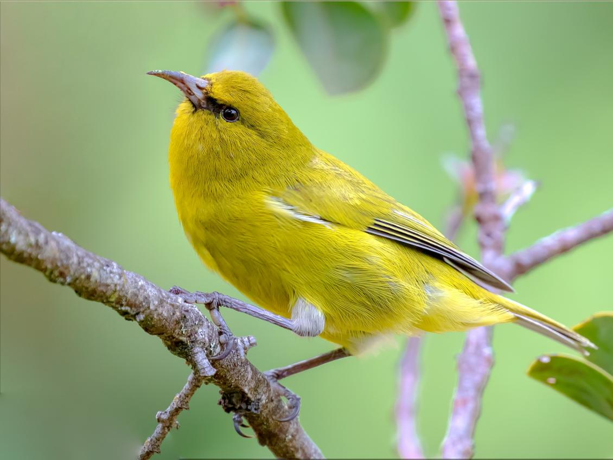

Researchers from The Ohio State University are turning to artificial intelligence and bioacoustics to unlock the mysteries of Hawaiian bird dialects as part of a conservation course underway in Hilo.
The study, focused on ‘Amakihi song patterns, is one of several projects under the “Experiential Introduction to AI and Ecology” course, which integrates cutting-edge technology with ecological research. From Jan. 15 to 29, participants are stationed at the NEON field site at the Pu’u Maka’ala Natural Area Reserve, tackling challenges ranging from koa tree restoration to invasive species identification.
Led by Ohio State Professor Tanya Berger-Wolf, University of Adelphi Assistant Professor Kaiya Provost, and a multidisciplinary team, the bioacoustics project aims to explore how environmental factors, such as elevation and proximity to human activity, influence 'amakihi vocalizations. 'Amakihi birds are known for their complex dialects, which may offer valuable insights into their adaptation to diverse habitats across Hawaii’s ecosystems.
“We’re combining AI with bioacoustic data to analyze bird songs in ways that were previously unimaginable,” said Jacob Beattie, a graduate student involved in the research. “By understanding these dialects, we hope to uncover how environmental pressures shape communication and behavior in Hawaiian birds.”
The team uses advanced audio recording equipment, such as song meter micro devices, to capture bird songs across varying elevations and kipukas (land areas between younger lava flows)). These recordings are then processed using machine learning models, which can identify species and detect subtle variations in song patterns.
Key research questions include how 'amakihi vocalizations vary across spatio-temporal scales and how these variations correlate with environmental changes. The findings could inform broader conservation strategies for Hawaiian birds, many of which face threats from habitat loss and climate change.
The project also assesses the accuracy of existing AI classifiers for Hawaiian bird dialects, laying the groundwork for improving such tools.
“This isn’t just about studying birds; it’s about equipping future researchers with tools that can be applied to conservation worldwide,” Provost said.
Preliminary results are expected in the spring, and findings will be shared through public webinars, social media, and academic publications.